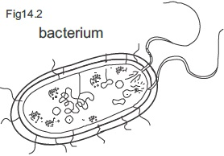
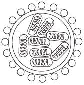

Beneficiary and hormful effects of
micro organisms
fig14.1: Plasmodium falciparum
fig14.2: bacterium

fig14.3: Influenza virus

Background information
Micro organisms are very minute living things which can not be seen individually by
the human eyes. They are commonly called germs and microbes and they can be
seen and studied with the aid of a microscope.
Micro organisms include all viruses, bluegreen algea, protists and certain
fungi. They can be found in the air, water, soil, on surface of objects and within living
organisms.
Culture: A Technique for growing micro organisms
Micro organisms can be grown in the laboratory in special media using the culture
technique. The nutrient agar is used for culture of most bacteria. To culture
organisms, the procedure of aseptic technique is applied so as not to contaminate
the culture media with microbes from the surroundings or clothes or even the
apparatus used.
Identification of micro organisms
Micro organisms can be identified by:
observing their forms and structure
through a microscope.
Staining technique with various types of stains and
observing their reaction through the microscope
colony characteristics
using various types of culture media,
Their oxygen requirements especially
bacteria
Applying biochemical tests so as to identify the activities of micro
organisms and identify it through that.
Micro organisms in our bodies and foods
Apart from the presence of micro organism in air, water, surface of objects and certain
living things, micro organism exists in human body and food substances.
Micro organisms in the body include:
The normal microflora in the body, pathogenic micro organisms in the body, Normal microflora start to colonize the body of infants few hours after birth. They
prevent or interfere with the invasion of the body by pathogens by producing
subtances which interfere with the survival or multiplication of certain pathogens. But
microflora can become pathogens due to low resistance or due to a relocation or
change in environment of the bacteria in the body.
Pathogenic micro organisms are the micro organisms that usually establish them
selves in human bodies and cause diseases. Such can occur due to (I) low body
resistance, disruption of normal microflora in the body by antibody therapy and
delay in the establishment of normal microflora in infants.
Micro organisms have food as their ideal medium in which they grow and multiply. The
characteristics of a given food determines the type of micro organisms that grow and
multiply in it.
When food is contaminated, micro organisms multiply rapidly in it if the food is
not cooked long enough to kill micro organisms, and their spores and to break down
the toxins. Disease causing micro organisms are called disease vectors. The
method, used by the disease vector in circulating the disease can be mechanically, biologically.
Beneficial effects of micro organisms
Maintenance of soil fertility and recycling of nutrients in the ecosystem through
their decomposing activities
Micro organisms used in chemical processes lowers the operating cost of the
process. Example: enzyme technology and genetic engineering.
Biological control of pests and biodegradation of pollutants
General questions on micro organism around us
1. State the other three groups of living things apart from virus and bacteria in which micro organisms belong
2. Among the microorganisms, a
is not capable ofgrowing on its own except in a living medium
3. In preparing a culture medium,
technique is applied in orderto avoid microbial contamination.
4. Micro organisms that cause diseases in our bodies are called
5. Write four ways through which micro organisms can enter into the body of man
10. Animals that carry disease causing micro organisms are called
Write four disease vectors you know
15. Bacteria is harmful to humans in two major ways.
16. The micro organism that is involved in alcoholic fermentation is
and it belongs to the group of kingdom of living things called
17. Normal
of the human body are micro organisms that colonize the body of human infants just a few hours after birth.
18. Female Anopheles mosquito is a vector of malaria fever while tsetse fly is a vector of
19. Cholera is a
borne disease.
20. Virus, Rhizopus, plasmodium, tapeworm are micro organisms except
Expression Exercise
1a. Fill in the empty spaces in the table below using the example of number one
Disease
Micro organisms that causes it
The disease vector
Symptoms and effects
i
Malaria
Plasmodium (protozoa)
Female Anopheles mosquito
Shivering high fever, with irregular
bouts of sweating.
high temperature, headache,
vomiting, backache and jaundice
ii
Yellow fever
Arbovirus
Aedes Mosquito
High temperature, headache,
vomiting, backache and jaundice
iii
Sleeping
sickness
Trypanosoma (protozoa)
Tsetse fly
Persistent feeling of sleepiness
fever and headaches
iv
Cholera
Vibrocholera
Housefly
Diarrhoea and vomiting
1b.
State four different media through which pathogenic organisms can reach their animal hosts.
Briefly explain three ways microorganisms can be useful in the food industries.
2a Write down the virus responsible for each of the disease listed below, the manner of attack ofthe disease and its method of spread
Disease
Manner of attack
Method of spread
Smallpox
Common cold
Rabies
HapatitisA
infective hapatitis
Acquired imune deficiency
Syndrome or Aids.
2b Write four techniques that can be used to identify micro organisms
d. What micro organisms is responsible for the fermentation process.
Draw the organism
2. Obtain some pasteurized milk. Taste it and test its PH with a universal indicator paper. Take 10cm3 of the milk in a test tube and add
1cm3 drop of yoghurt. Test the PH of the pasteurized milk again if there is any little change in PH. Stopper the tube,
incubate it at 370c for 24hours.
Taste a sample of the milk again and check its PH again. Based on your observation answer the questions below.
1
What type of taste did you observe in the milk before and after adding the yoghurt.
b What was the PH of the milk before and after adding the yoghurt
The yoghurt used contains a micro organisms called Lactobacillus. Is this organisms a bacteria or virus or fungi?
d Write what was responsible for the taste you observed after adding the yoghurt.
2.
a(i)
List two diseases each of plants and animals caused by bacteria.
(ii) state three ways in which bacteria are useful.
(b) state three
methods by which mosquitoes can be controlled and state the reason for each method.
(c) Describe an experiment to
demonstrate the presence of bacteria under the finger nails.